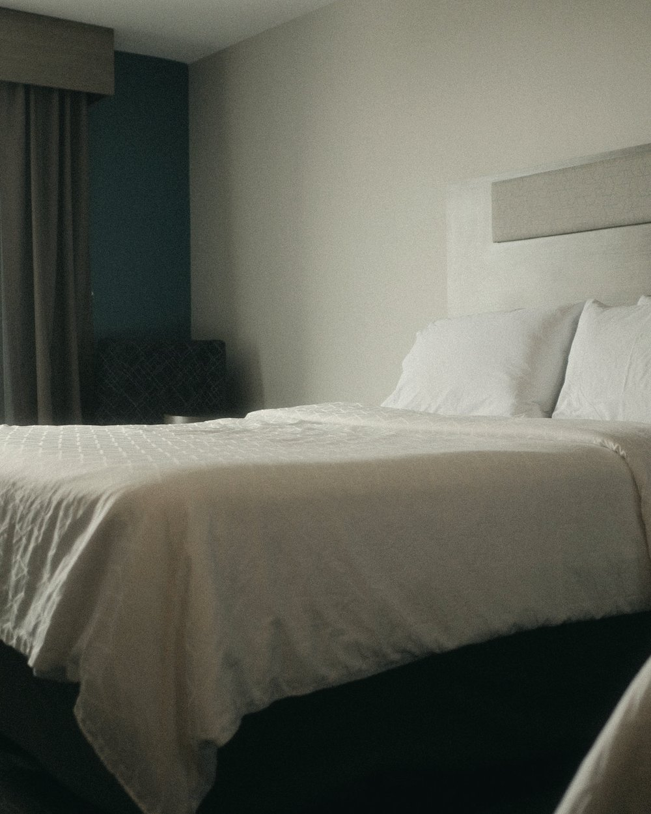
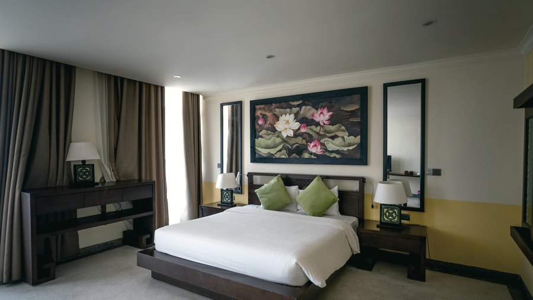
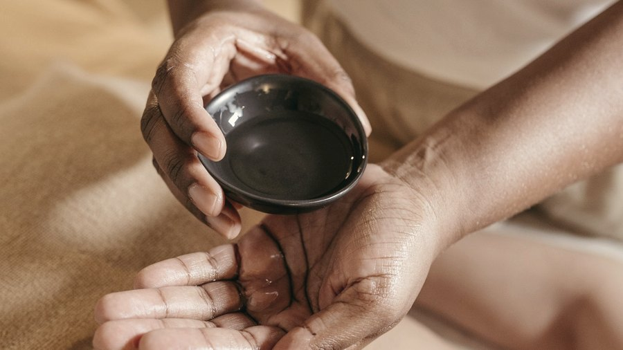
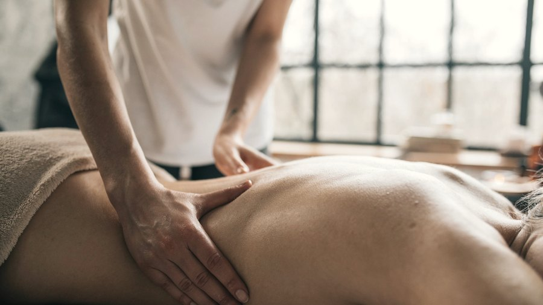
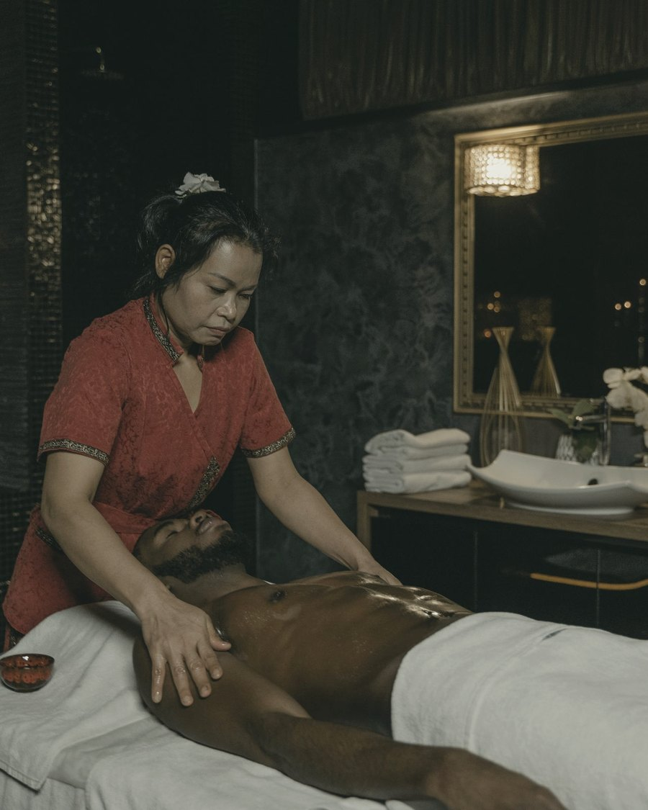

Rua 1, nº 12 · Adrianópolis · Manaus — AM
A La Belle Femme é uma clínica dedicada ao depois: drenagem linfática, curativos e recuperação assistida — inclusive com hospedagem em suíte privativa.
Renata Burton · Fisioterapeuta · CREFITO 459099-F · 24 anos em pós-operatório

O SPA pós-operatório
Suítes privativas e enfermagem 24 horas. Quem se hospeda aqui não está de férias: está no período em que o corpo decide como vai ficar o resultado da cirurgia. O dia tem hora marcada.
Verificação dos sinais, troca de curativo e a bandeja de café da manhã levada à suíte. É a hora que a paciente mais lembra depois.
A sessão do dia, feita por profissional. Não é massagem relaxante: é a técnica que reduz edema e organiza o resultado.
Posicionamento correto, cinta ajustada e acompanhamento de dor. Pequenas coisas que mudam a recuperação inteira.
Com ajuda, sem risco de esforço indevido — um dos momentos mais delicados dos primeiros dias.
Alguém acordado a noite inteira. É por isso que muita gente escolhe a suíte em vez de ir direto para casa.
O que oferecemos

Modalidade I
Suíte privativa com enfermagem 24h, drenagem diária, alimentação e acompanhamento nos primeiros dias após a cirurgia.

Modalidade II
Sessões avulsas ou em pacote para quem se recupera em casa, com protocolo definido a partir do tipo de cirurgia.

Modalidade III
Drenagem e banho assistido na casa da paciente, para quem não pode ou não quer se deslocar nos primeiros dias.
A clínica também opera o aluguel de poltronas de pós-operatório, em conta própria — para quem precisa do apoio em casa.
O que a casa repete
“É técnica com intenção.”
“A drenagem linfática não é opcional.”
“O resultado se consolida no pós, não na mesa.”

Quem conduz
Fisioterapeuta, CREFITO 459099-F, com mais de duas décadas dedicadas exclusivamente ao pós-operatório. É ela quem define o protocolo de cada paciente e quem responde no perfil da clínica, em primeira pessoa.
A conta da casa publica a rotina real da suíte — inclusive a bandeja do café da manhã. Não é conteúdo de campanha: é a maneira de mostrar como o serviço funciona antes de a paciente decidir.
Contato
Diga qual procedimento você vai fazer e a data. A partir disso a gente monta o plano de recuperação — suíte, clínica ou home care — e reserva a agenda com antecedência.